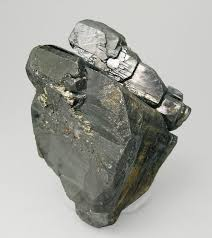

Inicio |
Coltan |
Explotacion de Oro |
Fiebre Del Oro |
Oro Ilegal |
Segun un informe del 2012, la poblacion mudial es de 7.000.000.000, mientras que el numero de celulares es de 5.600.000.000 esto quiere decir que el 70% de
Inicio |
la poblacion tiene un telefono movil; Segun estas estadisticas, se visualiza en en este año, 2017, el numero de celulares duplique al numero de poblacion.
Como muchos otros electrodomesticos, lo celulares necesitan un material para que su funcionamiento sea efectivo, su nombre es "Coltan"; El coltan es un material
que esta ubicado en la superficie terrestre, por lo que la estraccion es al cielo abierto y manualmente.
El Coltan es la union de dos minerales: Columbita y Tantalita. Entre las caracteristicas mas relevantes de este material,
estan: 1. Permitir la nantecnologia, 2. ser 80% mejor conductor que el cobre, 3. Es un mineral no renovable, 4. Ser resistente al calor, 5. No se oxida
Sin este material seria imposible contruir ciertos electrodomesticos, como lo pueden ser los GPS, camaras digitales, consolas de videojuegos, marcapasos, entre otros.
El lugar en el que se encuentra en mayor cantidad este material, es en africa, especificamente en la republica del Congo;
En este lugar se encuentra demasiada diversidad en recursos, pero a pesar de esto, es un pais que sufre de pobreza, ya que en promedio el salario de
un Congones es de 10 dolares al mes, mientras que un trabajador en las minerias de coltan, pueden ganar hasta 50 dolares a la semana(El kilo de coltan se vende por 500 dolares).
Se dice que en esta regio se encuentra el 80%de coltan en el mundo, pero esto es falso. ya que solamente tiene el 9% de reservas mundiales(de coltan), en cambio el 41% de reservas se
encuentra en america de sur, entre ellos esta colombia, el cual es un pais con mucha diversidad en recuros; Hace un tiempo (10 años) se encontro un gran yacimiento de coltan en la
regio de la Orinoquia. Entre las fabricas mas importantes se encuantran: NEC, SAMSUNG y VISHAY. Se dice que en el Congo mueren 2 niños por cada kilo de Coltan que se extrae.
Con respecto a Colombia, no son muy claras las cifras, pero es muy probable que los resultados sean peores que los del Congo.
Sin dispositivos electronicos podemos vivir, sin agua potable no.
